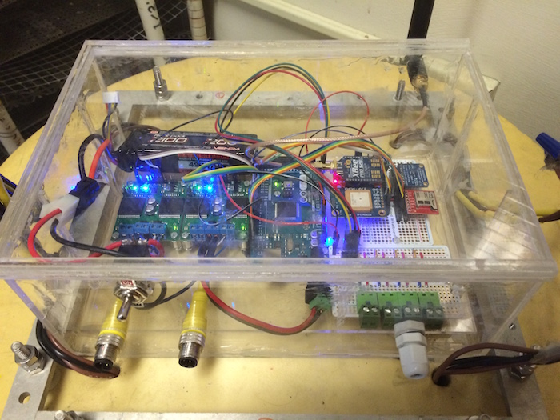

Over the summer of 2015, I worked in the Vortical Flow Research Lab at MIT with two grad students on creating autonomous swarming buoys to monitor dynamically changing ocean environments. These buoys can potentially collect any relevant data including temperature and chemical concentrations, though for the purposes of the research, we only tackled temperature measurement.
They also have the ability to communicate with each other and follow gradients in the data they're collecting.
Above is the electronic setup I developed in about a week that allowed us to begin prototyping and testing the buoy's movement and effectiveness of the motor system as well as trying out some code. I put everything in a nice splash proof case I made out of acrylic and waterproof epoxy.